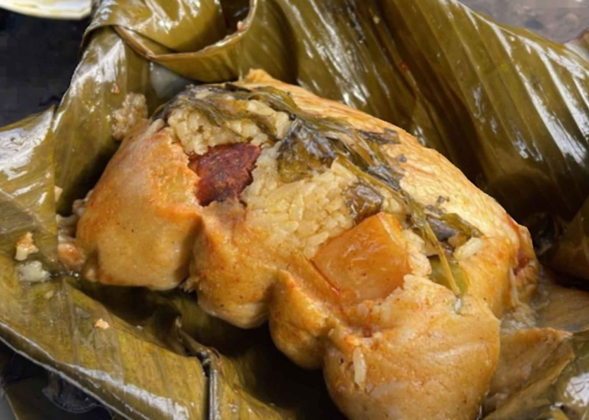

Nacatamal
Home

Description
Traditional Nicaraguan nacatamales make an excellent Sunday breakfast that
will surprise most people due to their large size – almost 10 ounces. A
proper nacatamal is large, always wrapped in banana leaves, and has an
ultra-fine corn dough. It's usually filled with pork or chicken in adobo
sauce, a bit of rice, a slice of potato and tomato, a stem of mint,
raisins, prunes, olives, peanuts, chili peppers and pieces of pork jowl.
According to custom, this dish is accompanied by bread and café con leche,
but the type of drink served can vary according to the occasion. Some
cooks add puréed potato to the dough, to give it body and volume. In
recent years, vegetarian nacatamales and other interesting versions have
become available as well. What's certain is that Nicaraguans love their
nacatamales, and don't only enjoy them at home, but at fiestas and
celebrations also. For these occasions it's normal that mini nacatalmales
are served; made with the same fillings, just smaller. This cocktail-sized
appetizer can be specially pre-ordered in advance or made at home. If
hand-made, the family will usually help out to make the work go faster,
since preparation for these tamales starts at least 24 hours in advance.
Hopefully this recipe will motivate you to try preparing these
nacatamales–it's an intense job, but can be shared by the whole family. So
why not put your hands to work and enjoy the preparation!
Ingredients
For the filling
- 6 ozs pork jowl, cut into one inch cubes
- 2 lbs pork ribs, roughly cut with the bones removed
- 3 tomatoes, grated
- 1 cup diced white onion
- 1 red bell pepper, chopped
- 6 garlic cloves, peeled
- 1 tablespoon achiote or annatto, dissolved in water
- 1/2 cup juice from a bitter orange
- Salt
- 1 teaspoon black pepper
For the filling
- 2 lbs corn flour, the type for making tortillas
- 3 cups lukewarm water
- Juice from one whole bitter orange
- 3 cups pork lard or drippings, melted
- Salt
Main ingredients
8 ozs rice, soaked in water and drained
2 white potatoes, sliced
3 tomatoes, sliced
1 large white onion, sliced
12 stems of mint or spearmint
1/2 cup green olives
1/2 cup prunes
1/2 cup raisins
1/4 cup peanuts
1/4 cup capers
1/4 cup red and green habanero peppers, also known as congo peppers
To assemble
- 2-3 rolls of smoked or boiled banana leaves
- Twine, to tie up the nacatamales
Steps
-
First prepare the meat for the filling. The rib meat and pork jowl
should be cooked in a covered pot over low heat with the tomatoes,
onion, bell pepper, garlic, dissolved achiote, bitter orange juice, salt
and pepper.
-
Add 1/2 or one full cup of water if necessary, and when the meat is
tender, adjust the seasoning as desired. Remove from heat and let cool;
the meat should be juicy and well seasoned.
-
To prepare the dough, place the corn flour in a bowl. Add the lukewarm
water, bitter orange juice and knead constantly. Slowly incorporate the
melted pork drippings and salt. The dough should be very smooth and
similar in texture to play-dough. If the result is too dry, add a bit of
water. Remember that as the dough rests, it will become more firm. When
this happens, place in a pot over medium-heat and stir with a wooden
spoon for around 40 minutes.
-
Have the banana leaves ready for assembling the nacatamales. Take two
leaves and place in the form of a cross. Place a 3/4-cup portion of
dough in the center, where the leaves overlap, and slightly flatten with
your hand. Over the dough, add a piece of pork meat and two cubes of
pork jowl. Cover with one tablespoon of sauce left from cooking the
pork.
-
To the side of the dough, place one tablespoon of soaked rice, with one
slice of potato, tomato, onion and a stem of mint.
-
To the other side of the dough, add an olive, one prune, two raisins,
one peanut, two capers and two habanero peppers (one red and one green.)
-
Close the tamale as if it was an empanada, securing the contents well
with the banana leaves, so that none of the filling falls out. Tie the
nacatamales with twine to keep closed.
-
To cook, cover the base of a large pot with a rack and place the
leftover banana leaf scraps on top. Then add the prepared nacatamales
followed by more banana leaves. Add enough boiling water to fill half of
the pot.
-
Cover the pot with a lid and cook over medium heat to steam the tamales
for three to four hours. Remember that you’ll have to add more hot water
over time, as it boils away.
- When finished, serve hot accompanied with pita bread.